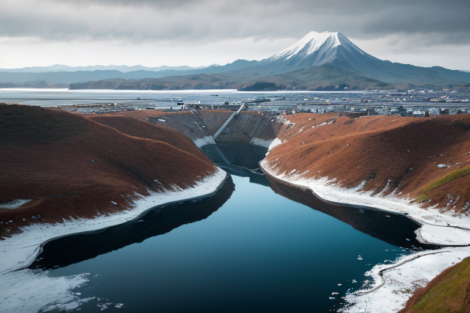
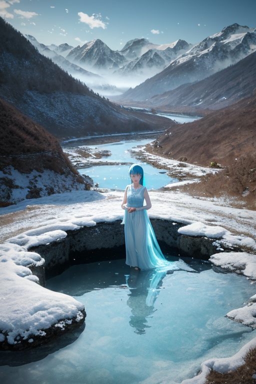
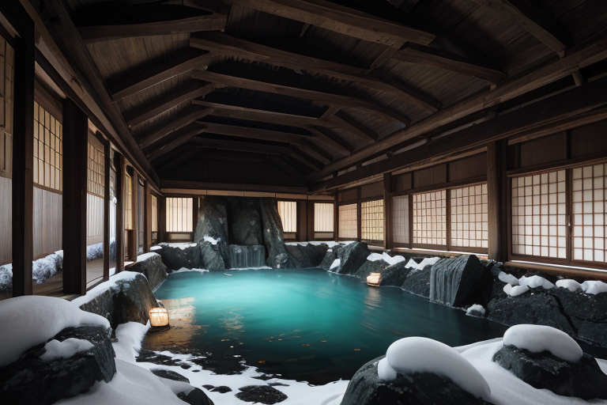
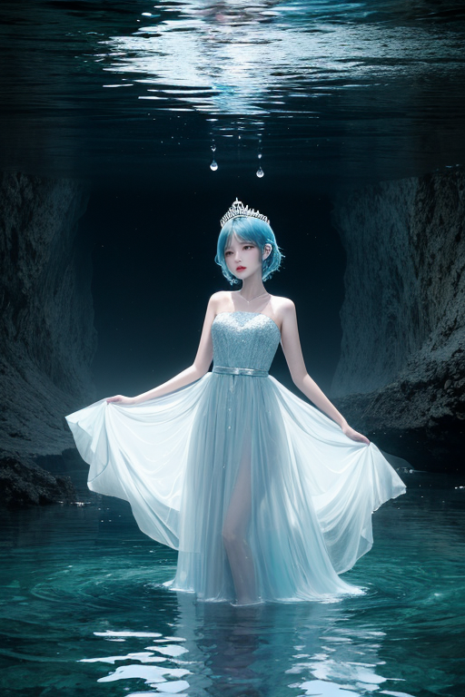
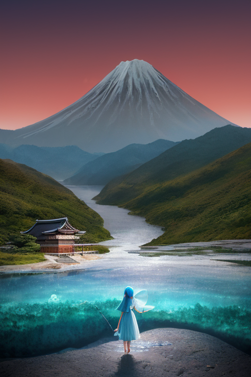

第一章 現実の富山
あなたはまだ気づいていない。この土地にも、王がいることを。
富山湾は、立山連峰の雪解け水を湛えた深い青だった。その海と山の狭間、境界線上に、この県は横たわる。雨晴海岸から望む立山は、海に浮かぶ巨大な影絵のようで、現実と非現実の境が曖昧になる。北前船が往来した港には、今も薬売りの行商精神が、目に見えない水路のように流れている。
そのすべての「境界」を、彼は見つめていた。トヤマリア・アクア、透明王。その身体は、富山湾の深層水のように透き通り、立山の稜線をわずかに映すだけだ。彼の王国「トヤマリア・アクア」は、山から海へと注ぐ無数の水脈そのもの。彼は感情を持たないはずの存在だった。しかし、この土地の「間」に立つとき、海風が運ぶ潮の香りや、山肌を駆け下りる冷たい水の気配が、彼の内側に、かすかな「何か」を生じさせ始めていた。
透明であることは強さか？ 彼は問いを抱え、黒部ダムの巨大なコンクリート壁の上に立つ。ダム湖は、彼の王国の心臓のように静かに鼓動していた。

第二章 歪みの兆候
黒部ダムの監視室で、アクエリスが示した水脈図に、微かな乱れが生じていた。北アルプスに降り積もった雪解け水の流れに、異質な「重さ」が混入している。それは、遠く離れた大地の震えが、地下水脈というネットワークを伝い、この山国の水にまで影響を及ぼし始めた証だった。トヤマリアは、立山連峰の稜線を透視する。見えない歪みの波が、雪渓を揺らし、伏流水の音色を僅かに濁らせている。
「調整を開始します」
彼の声に感情はない。王国の全水脈を自らの感覚器官とし、乱れを吸収、分散させる作業が始まる。富山湾に注ぐすべての川の流量を微調整し、地中の圧力を均し、歪みが一点に集中するのを防ぐ。それは、巨大な津波を数秒遅らせ、山崩れの規模を一段階減ずる、些細な調整の連続だ。
しかし、作業中、ふと五箇山の合掌造りを思い浮かべた。雪に耐えるあの傾斜屋根は、圧力を逃がす「調整」の形だ。そして、自身が今行っていることもまた、同じ原理ではないか。ただ、彼は屋根ではなく、水そのものだ。圧力を受け、流れ、分散させる透明な媒体。
歪みは収束に向かった。彼の内側に、作業の完了を知らせる安堵はない。代わりに、増幅した疑問だけが残る。圧力を一身に受け流すこの透明さは、果たして強さと言えるのか。彼はただ、流れ続けるしかないのだろうか。

第三章 王の葛藤
黒部ダムの巨大なコンクリート壁は、彼の問いをそのまま映し返す。圧倒的な水圧を湛えながら、ただ黙って受け止めるその姿は、強さなのか、それとも単なる受動か。トヤマリア・アクアは、自らの透明な身体を通して、地底を流れる水脈の微細な歪みを調整していた。圧力は分散され、岩盤の軋みはかすかな振動へと和らぐ。彼は何も生み出さない。ただ、流れを整えるだけだ。
富山湾の深層からは、ホタルイカの淡い光が届く。彼らは自らを発光させ、存在を示す。対して、彼は透明であり続ける。それは、歪みという「圧力」を一身に引き受け、他者に気付かれずに分散させるための性質だった。しかし、五箇山の合掌造りが雪の重みを「逃がす」ように、彼の透明さもまた、ただ耐えるだけのものなのか。受け入れることと、流されることの境界は、彼の中で溶け始めていた。

第四章 妖精との対話
黒部ダムの巨大なコンクリート壁を、アクエリスは指でなぞった。水脈の妖精は、常に流れの均衡を保つが、自らは水そのものではない。
「王よ。透明であることは、流れに身を任せることではありません」
彼女の声は、ダム湖の底から湧き上がる水のように冷たく、澄んでいた。
「北前船が富山湾に運んだのは、物だけではありません。外の言葉、外の色。それらは全て、この土地の水に溶け、やがて透明な『富山の水』となりました。受け入れ、溶かし、なお自分であり続けること。それが、この王国の強さです」
タテヤミアが、立山連峰の雪壁のように静かに言った。
「透明である王が感じる孤独は、雪解け水が地中に滲み、長い時をかけて再び湧き出るまでの時間のようなものです。それは、弱さではなく、次の出会いへの、深い呼吸なのです」
王は、自らがただの「受け皿」ではないと、初めて思った。

第五章「微調整と余韻」
黒部ダムの巨大なコンクリート壁に、夕陽が赤く染まっていた。観光客のざわめきが去った後、静寂が水を湛える人造湖に戻ってくる。トヤマリア・アクアはその水面に立ち、富山湾から立山連峰へと続く、見えない水脈の流れを感じていた。北前船がもたらした異文化は、この地の水のように、拒まず、しかし薄めもせず、透明な層として蓄えられてきた。薬売りの行商が伝えた知恵、五箇山に根付いた信仰、それらすべてが、この土地の質感を形作っている。
王は手を伸ばした。指先から微かな波動が広がり、明日この地域をかすめる低気圧の経路が、ごくわずか東にずれた。それは台風を消す力ではない。せいぜい、雨晴海岸に打ち寄せる波の高さを数センチ抑え、氷見の漁師たちがブリを追う時間を、ほんの少しだけ長くする調整だ。
ふと、ダムの管理通路で一人の老人が、湖を眺めているのに気づいた。かつてこの建設に携わったというその男は、何十年もこの水と向き合ってきた。彼は何も言わず、ただ深く息を吸い、透明な空気と水の景色を胸に収めた。王は彼の後ろに立つことも、声をかけることもない。ただ、老人が感じているであろう、この巨大な水塊への畏敬と、それによってもたらされる平穏への祈りを、透明な存在として共有した。
強さとは何か。それは、この老人のように、自らの役割と、それによって守られるものを見つめ、ただそこに在り続けることなのかもしれない。王は自問をやめ、ゆっくりと姿を透明に溶かしていった。水脈は静かに流れ、山は黙して雪を蓄える。
あなたの町にも、王がいる。